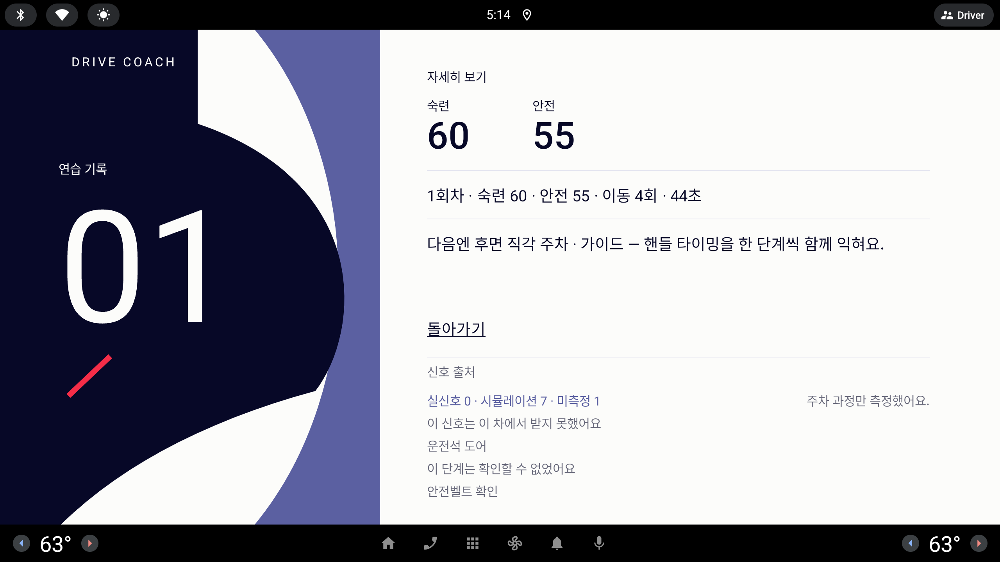

밑줄 텍스트 "돌아가기" 를 빨간 주 알약 옆에서도 버튼으로 읽히되, 언제나 한 단계 아래로 보이는 보조 버튼으로 바꾼다.
"'시작'의 빨간 알약이 중요한 기능이지만 너무 텍스트에 밑줄만 친 느낌이라 3가지 정도 컨셉에 어우러지는 돌아가기 버튼을 제안받고 싶어"— 사용자 피드백, 라운드 21
모든 시안은 1/3 축척 · 실제 화면은 약 3배 (853×423 = 2560×1268 dp)
지금
Ink 글자 + 밑줄. 과제 시트·시험장 예약은 왼쪽 아래, 자세히 보기는 본문 중간에 놓인다. 빨간 알약과 짝이 되는 "버튼" 으로는 읽히지 않고, 누르는 면(터치 타깃)도 글자 크기만큼만 보인다.
과제 시트 — 돌아가기(왼쪽 아래) · 시작 알약(오른쪽 아래)

자세히 보기 — 회차 목록과 신호 출처 사이
과제 시트 아래쪽 (1/3) — 모드 줄 · 돌아가기 · 시작 알약
모드
가이드힌트평가
시작 →
자세히 보기 (1/3) — 본문 중간
2회차 · 숙련 100 · 안전 100 · 이동 2회 · 29초
조향 왕복 1 · 기어 전환 0 · 근접 0 · 급정지 0
신호 출처
실신호 0 · 시뮬레이션 7 · 미측정 1
상태 (1.5배 확대해서 보여 줌 · 직접 눌러 봐도 된다)
기본
눌림 — Lavender 면
Ink 위 기본
Ink 위 눌림
A
윤곽
Ink 1.5px 테두리의 빈 알약에 "← 돌아가기". 빨간 알약과 같은 모양, 정반대 무게.
장점
"같은 알약 가족" 이 한눈에 보인다 — 오른쪽 → 빨강(앞으로), 왼쪽 ← 윤곽(뒤로)의 대칭.
면이 비어 있어 빨간 알약보다 확실히 가볍다. 위계가 흔들리지 않는다.
그림자·질감 없이 선 하나라 구현이 가장 쉽다(Compose OutlinedButton 한 줄).
Ink 패널 위에선 Paper 75% 선으로 그대로 뒤집힌다.
주의점
실제 화면 선 굵기 약 4–5 dp 가 필요하다 — 2 dp 이하면 2560 화면에서 실선이 흐려 보인다.
"모든 카드형 면에 질감 그림자" 원칙의 예외가 된다(선 버튼이라 그림자 없음).
바로 위 모드 칩(Lavender 면)과 형태 언어가 다르다 — 면 vs 선.
과제 시트 아래쪽 (1/3)
모드
가이드힌트평가
시작 →
자세히 보기 (1/3)
2회차 · 숙련 100 · 안전 100 · 이동 2회 · 29초
조향 왕복 1 · 기어 전환 0 · 근접 0 · 급정지 0
신호 출처
실신호 0 · 시뮬레이션 7 · 미측정 1
상태 (1.5배)
기본 — 질감 그림자
눌림 — 그림자 안으로 · 1px 내려감
Ink 위 기본 — Paper 12%
Ink 위 눌림
B
면
Lavender 로 채운 알약 + 질감 B 그림자. 모드 칩·과제 카드와 같은 재질의 "부드러운 보조 알약".
장점
화면에 이미 있는 Lavender 칩·카드와 재질이 같아 가장 자연스럽게 어우러진다.
"모든 카드형 면에 질감 그림자" 원칙을 그대로 지킨다.
면이 있어 누르는 범위가 눈에 보인다 — 장갑·흔들림에도 겨냥이 쉽다.
눌림 피드백이 질감(그림자가 안으로)으로 표현돼 손맛이 있다.
주의점
Lavender 와 Paper 의 명도 차가 작아, 밝은 햇빛에서 면 경계가 옅어진다 — 그림자가 경계를 대신한다.
선택되지 않은 모드 칩과 색이 같아 "선택지 하나" 로 오인될 여지 — 알약 모양·화살표로 구분.
구현은 A 와 비슷(배경색 + 공용 질감 modifier).
과제 시트 아래쪽 (1/3)
모드
가이드힌트평가
시작 →
자세히 보기 (1/3)
2회차 · 숙련 100 · 안전 100 · 이동 2회 · 29초
조향 왕복 1 · 기어 전환 0 · 근접 0 · 급정지 0
신호 출처
실신호 0 · 시뮬레이션 7 · 미측정 1
상태 (1.5배)
기본 — Lavender 원 + 글자
눌림 — 원이 Ink 로 반전
Ink 위 기본
Ink 위 눌림 — Paper 원
C
원
질감 그림자를 입힌 Lavender 원 안에 ← 화살표, 옆에 밑줄 없는 "돌아가기". 기하학 포스터의 "원" 도형을 버튼으로.
장점
원 하나라 면적이 가장 작아 빨간 알약과 경쟁하지 않는다 — 위계 차이가 가장 크다.
원·직사각형·알약으로 도형 어휘가 늘어 "기하학 포스터" 컨셉에 가장 잘 맞는다.
눌림이 원 반전(Lavender → Ink)으로 또렷하다.
주의점
글자 부분까지 눌려야 한다 — 터치 영역을 원 + 글자 전체(실제 약 120 dp 높이)로 잡아야 한다. 원만 누르게 두면 타깃이 작다.
원 아이콘 버튼은 "닫기·뒤로" 시스템 버튼처럼 보일 수 있다(AAOS 상단 뒤로 버튼과 혼동 여지).
구현은 셋 중 가장 손이 간다(아이콘 + 원 + 글자 묶음, 접근성 라벨 따로).
같은 부품을 다른 글자 링크에도 선택 사항
지금 밑줄 글자로 남아 있는 "오늘은 여기까지", "그만하기", "과제·모드 바꾸기" 도 같은 보조 버튼으로 바꾸면 화면마다 "빨강 = 앞으로, 보조 = 그 밖" 규칙이 하나로 통일된다. 뒤로 가는 동작이 아니므로 ← 화살표는 빼고 글자만 둔다. 이번 라운드 필수 범위는 아니다.
A다시 하기 →
B다시 하기 →
C다시 하기 →
C 는 링크마다 아이콘을 새로 정해야 해서 확장 비용이 크다. A·B 는 글자만 바꾸면 된다.
추천
B · 면 — Lavender 보조 알약
화면에 이미 있는 Lavender 칩·카드와 같은 재질·질감이라 가장 잘 어우러지면서, 빨간 알약과는 색 무게로 위계가 분명하다. 다른 글자 링크로 넓히기도 가장 쉽다. Ink 면 위에 놓일 때는 Paper 12% 면으로 뒤집는다.